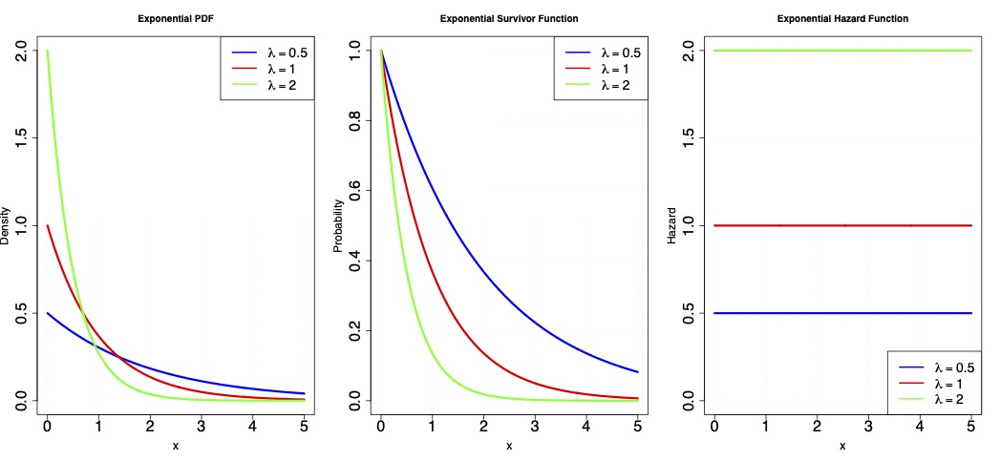
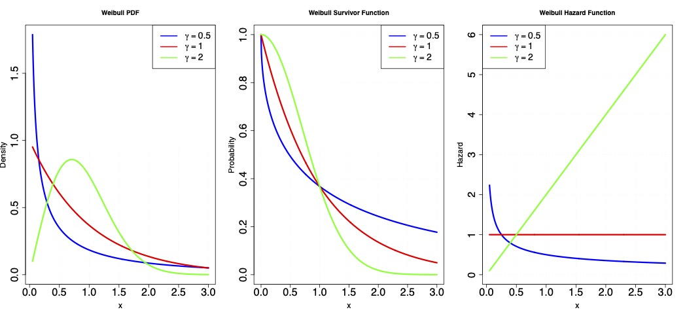
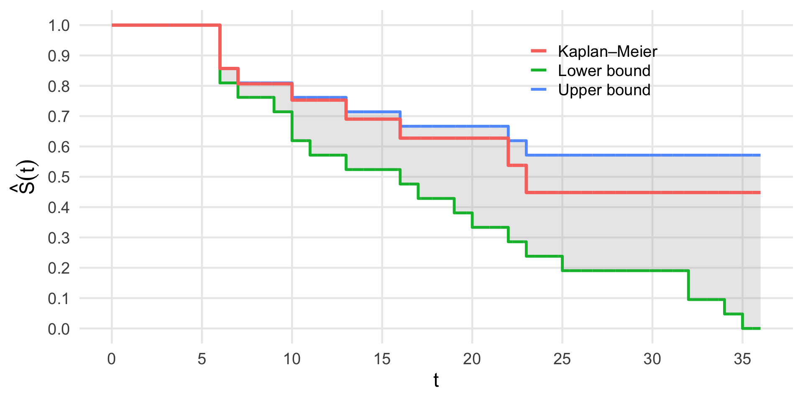

Censoring and introduction to non-parametric methods
Agenda
- Review
- Parametric survival models
- Censoring
- Introduction to non-parametric hazards-based methods
- Kaplan-Meier
- Some time to briefly organize group work
Review
Exponential distribution:
- characterized by a single “rate” parameter \(\lambda\)
- \(\mathbb{E}[T] = \frac{1}{\lambda}\)
- \(f(t)= \lambda exp(-\lambda t)\)
- \(F(t) = 1- exp(-\lambda t)\)
- \(S(t) = exp(-\lambda t)\)
- A constant hazard model
Review

Review
Exponential distribution:
- in the exponential family: GLMs!
- canonical link function is the identity
- \(\mathbb{E}[T \mid A] = \beta_0 + \beta_1A\)
- \(\lambda(t \mid A) = \frac{1}{\beta_0 + \beta_1A}\)
- \(S(t \mid A) = exp\Big(-\frac{t}{\beta_0 + \beta_1A}\Big)\)
Review
The Weibull distribution generalizes the exponential distribution, and has two parameters
- \(\lambda\): the scale parameter
- \(\gamma\): the shape parameter
\[\begin{align*} S(t) &= e^{-\lambda t^\gamma} \\ f(t) &= \frac{-d}{dt}S(t)=\gamma \lambda t^{\gamma-1} e^{-\lambda t^\gamma}\\ \lambda(t) &= \gamma \lambda t^{\gamma-1}\\ \Lambda(t) &= \int_0^t\lambda(u) du = \lambda t^\gamma \end{align*}\]
Review
- \(\gamma=1 \rightarrow \mbox{ constant hazard}\)
- \(0<\gamma<1 \rightarrow \mbox{ decreasing hazard}\)
- \(\gamma > 1 \rightarrow \mbox{ increasing hazard}\)

Parametric survival
- Parametric models are nice because we can write down the likelihood
- With the likelihood, we can do MLE
- But to evaluate the likelihood we need to observe all of the data…
Limitations of parametric survival analysis
- Censoring in a fundamental feature of survival data:
- In most studies, we do not measure \(T\) for all individuals
- instead, we measure some other variable \(T^*\)
- \(X\) is the time an individual is “lost-to-follow-up”
- \(T^* := min(X, T)\)
- \(C\) indicates whether a person was censored, i.e., \(C = I(X<T)\)
Censoring
Sources of censoring:
- studies end at a particular calendar date.
- individuals drop out of a study
- possibly because of side-effects of one of the treatments…
Censoring
- Most practical methods in survival analysis seek to solve a more difficult problem than regular statistical objectives: do inference on \(S(t)\) using incomplete data on \(T\).
- For some individuals we observe \(T\) directly, for other individuals we only partially observe \(T\)
- partial observation of the event process.
- we need assumptions to do inference on \(S(t)\)
- we will need to do identification and we will end up with more exotic estimators directly motivated by this process.
Censoring
To motivate some approaches that work in the presence of censoring, lets first consider an example without censoring and discrete time points.
Time to relapse (weeks) for 21 leukemia patients who received control treatment:
- 1, 1, 2, 2, 3, 4, 4, 5, 5, 8, 8, 8, 8, 11, 11, 12, 12, 15, 17, 22, 23
How would you estimate a survival curve without parametric assumptions?…
Let’s return to our event process.
What is the probability that an individual survives more than 10 weeks?
- \(\widehat{S}(10) = P(Y_{10}=0) = \widehat{P}(T > 10)=8/21 = 0.38\) (since 8 people survived more than 10 weeks)
What about the probability that an individual survives more than 8 weeks?
- \(\widehat{S}(8) = \widehat P(T > 8) = 8/21 = 0.38\) (the four events at 8 weeks are counted as having already failed)
Censoring
Generally… \[ \widehat{S}(t) = \frac{\#~individuals~ with~T > t}{total~sample~size} \]
Empirical survival function
1, 1, 2, 2, 3, 4, 4, 5, 5, 8, 8, 8, 8, 11, 11, 12, 12, 15, 17, 22, 23
| Values of \(t\) | # individuals with \(T > t\) | \(\widehat{S}(t)\) |
|---|---|---|
| \(0 \le t < 1\) | 21 | \(21/21 = 1.000\) |
| \(1 \le t < 2\) | 19 | \(19/21 = 0.905\) |
| \(2 \le t < 3\) | 17 | \(17/21 = 0.809\) |
| \(3 \le t < 4\) | 16 | \(16/21 = 0.762\) |
| \(4 \le t < 5\) | 14 | \(14/21 = 0.667\) |
| \(5 \le t < 8\) | 12 | \(12/21 = 0.571\) |
| \(8 \le t < 11\) | 8 | \(8/21 = 0.381\) |
| \(11 \le t < 12\) | 6 | \(6/21 = 0.286\) |
| \(12 \le t < 15\) | 4 | \(4/21 = 0.191\) |
| \(15 \le t < 17\) | 3 | \(3/21 = 0.143\) |
| \(17 \le t < 22\) | 2 | \(2/21 = 0.095\) |
| \(22 \le t < 23\) | 1 | \(1/21 = 0.048\) |
Censoring…
Consider time to relapse (weeks) for leukemia patients in the treatment group. Times with \(^+\) are right censored: \(6^+,6,6,6,7,9^+,10^+,10,11^+,13,16,17^+\) \(19^+,20^+,22,23,25^+,32^+,32^+,34^+,35^+\)
- Estimate \(S(-6)\)?
- \(\widehat{S}(6-)= 21/21\)
- Estimate \(S(6)\)?
- Let’s assume that “censoring at time \(t\)” have occurred just before \(t\).
- \(\widehat{S}(6) = 17/21\) is not consistent: (since status of one person censored at time 6 unknown)
Censoring…
\(6^+,6,6,6,7,9^+,10^+,10,11^+,13,16,17^+\) \(19^+,20^+,22,23,25^+,32^+,32^+,34^+,35^+\)
To make progress, let’s consider the event processes…
- For uncensored individuals we observe \(Y^t =0\) for \(t<T\), \(Y^t =1\) otherwise.
- For censored individuals we observe \(Y^t =0\) for \(t<X\), \(Y^t = ?\) otherwise.
Censoring…
\(6^+,6,6,6,7,9^+,10^+,10,11^+,13,16,17^+\) \(19^+,20^+,22,23,25^+,32^+,32^+,34^+,35^+\)
Without any assumptions, we can only bound survival.
- A valid lower bound for an index parameter is a parameter guaranteed to be lower than that index parameter
- A valid upper bound is guaranteed to be higher than that index parameter
- A sharp lower bound is the highest valid lower bound.
- A sharp upper bound is the lowest valid upper bound.
Censoring…
\(6^+,6,6,6,7,9^+,10^+,10,11^+,13,16,17^+\) \(19^+,20^+,22,23,25^+,32^+,32^+,34^+,35^+\)
- Define \(T_L = X\) if \(C=1\) and \(T_L = T\) otherwise.
- Define \(T_U = +\infty\) if \(C=1\) and \(T_U = T\) otherwise.
- effectively, uniformly imputes the minimimum and maximum survival time, respectively.
- \(T_L\) and \(T_U\) are fully observed
- \(S_L(t) = P(T_L>t)\) is a sharp lower bound for \(S(t)\)
- \(S_U(t) = P(T_U>t)\) is a sharp upper bound for \(S(t)\)
Censoring…
- \(T^*\): \({\color{blue}6^+},6,6,6,7,{\color{blue}9^+,10^+},10,{\color{blue}11^+},13,16,{\color{blue}17^+}\) \({\color{blue}19^+,20^+},22,23,{\color{blue}25^+,32^+,32^+,34^+,35^+}\)
- \(T_L\): \({\color{blue}6},6,6,6,7,{\color{blue}9,10},10,{\color{blue}11},13,16,{\color{blue}17}\) \({\color{blue}19,20},22,23,{\color{blue}25,32,32,34,35}\)
| Values of \(t\) | # individuals with \(T_L > t\) | \(\widehat{S}_L(t)\) |
|---|---|---|
| \(0 \le t < 6\) | 12 | \(21/21 = 1\) |
| \(6 \le t < 7\) | 8 | \(17/21 = 0.81\) |
| \(7 \le t < 9\) | 6 | \(16/21 = 0.76\) |
| \(9 \le t < 10\) | 4 | \(15/21 = 0.71\) |
| \(10 \le t < 11\) | 3 | \(13/21 = 0.62\) |
| \(11 \le t < 13\) | 2 | \(12/21 = 0.57\) |
| \(13 \le t < 16\) | 1 | \(11/21 = 0.52\) |
| \(16 \le t < 17\) | 1 | \(10/21 = 0.48\) |
| \(\vdots\) | \(\vdots\) | \(\vdots\) |
| \(35 \le t < 36\) | 1 | \(1/21 = 0.048\) |
Censoring…
- \(T^*\): \({\color{blue}6^+},6,6,6,7,{\color{blue}9^+,10^+},10,{\color{blue}11^+},13,16,{\color{blue}17^+}\) \({\color{blue}19^+,20^+},22,23,{\color{blue}25^+,32^+,32^+,34^+,35^+}\)
- \(T_U\): \(6,6,6,7,10,13,16\) \(,22,23, {\color{blue} \infty,\infty,\infty,\infty,\infty,\infty,\infty,\infty,\infty,\infty,\infty,\infty}\)
| Values of \(t\) | # individuals with \(T_U > t\) | \(\widehat{S}_U(t)\) |
|---|---|---|
| \(0 \le t < 6\) | 12 | \(21/21=1.00\) |
| \(6 \le t < 7\) | 8 | \(18/21=0.86\) |
| \(7 \le t < 10\) | 6 | \(17/21=0.81\) |
| \(10 \le t < 13\) | 2 | \(16/21=0.76\) |
| \(13 \le t < 16\) | 1 | \(15/21=0.71\) |
| \(16 \le t < 22\) | 1 | \(14/21=0.67\) |
| \(22 \le t < 23\) | 1 | \(13/21=0.62\) |
| \(\vdots\) | \(\vdots\) | \(\vdots\) |
| \(23 \le t < 36\) | 1 | \(12/21 =0.57\) |
Censoring…

Censoring…
Can we do better by leveraging background knowledge? (i.e., can we use assumptions we believe in)?
- Let’s look at survival in terms of discrete-time hazards:
- \(S(t) = P(Y_t=0)\)
- \(= P(Y_t=0, Y_{t-1}=0, \dots, Y_{0}=0)\)
- \(=\prod\limits_{k=0}^tP(Y_k=0\mid Y_{k-1}=0, \dots, Y_{0}=0)\)
- \(=\prod\limits_{k=0}^tP(Y_k=0\mid Y_{k-1}=0)\)
- \(=\prod\limits_{k=0}^t\Big(1-\lambda(k)\Big)\)
- We still have the same issue of not observing \(Y_t\) for all individuals.
Censoring…
Can we identify \(S(t)\) in terms of variables we completely observe, under assumptions?
- Independent censoring: \(T \perp C\)
- \(\lambda^*(k):=P(T=k \mid T \geq k, C>k)\)
- \(= P(T=k \mid T \geq k, C>k)\)
- \(S(t) =\prod\limits_{k=0}^t\Big(1-\lambda^*(k)\Big)\)
Censoring…
\(T^*\): \({\color{blue}6^+},6,6,6,7,{\color{blue}9^+,10^+},10,{\color{blue}11^+},13,16,{\color{blue}17^+}\) \({\color{blue}19^+,20^+},22,23,{\color{blue}25^+,32^+,32^+,34^+,35^+}\)
| Values of \(t\) | # \(T<t, C>t\) | \(1-\lambda^*(t)\) | \(\widehat{S}_{KM}(t)\) |
|---|---|---|---|
| \(0 \le t < 6\) | \(21\) | – | \(1\) |
| \(6 \le t < 7\) | \(21\) | \(18/21\) | \(18/21 = 0.86\) |
| \(7 \le t < 10\) | \(17\) | \(16/17\) | \((18/21)(16/17) = 0.81\) |
| \(10 \le t < 13\) | \(15\) | \(14/15\) | \((18/21)(16/17)(14/15) = 0.75\) |
| \(13 \le t < 16\) | \(12\) | \(11/12\) | \((18/21)(16/17)(14/15)(11/12) = 0.69\) |
| \(16 \le t < 22\) | \(11\) | \(10/11\) | \((18/21)(16/17)(14/15)(11/12)(10/11) = 0.63\) |
| \(22 \le t < 23\) | \(7\) | \(6/7\) | \((18/21)(16/17)(14/15)(11/12)(10/11)(6/7) = 0.54\) |
| \(23 \le t < 36\) | \(6\) | \(5/6\) | \((18/21)(16/17)(14/15)(11/12)(10/11)(6/7)(5/6) = 0.45\) |
Censoring…
